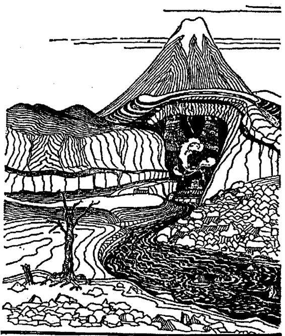

B Ö L Ü C D 11
k A p i N i N i e ş i ç i N ö e
İki günlük yolculuk sırasında Uzun Göl1
ün yukarısına doğru küreklere asılıp
Akan Nehir1 e geçtiler ve o zaman hepsi
Yalnız Dağ'ı önlerinde suratsız ve
dimdik yükselirken görebildiler. Akıntı
güçlü ve gidişleri ağırdı.
Üçüncü günün sonunda nehrin birkaç mil
yukarısında sola, yani nehrin batı
kıyısına yanaşıp karaya ayak bastılar.
Burada onlarla buluşmak üzere
gönderilmiş kumanyalar ve gerekli
şeylerle yüklü atlar ve kendileri için
olan midillilerin yanına vardılar.
Midillilere yükleyebildikleri kadarını
yüklediler ve geri kalanı bir çadırın
altına depolandı, ama kasabadan hiç
kimse bu geceyi Dağ'ın gölgesine bu
denli yakın bir yerde, onlarla birlikte
geçirmeyecekti,
'Şarkılar gerçekleşmedikçe hiçbir
şekilde olmaz!'
dediler. Bu yabanıl yerlerde Ejderha'ya
inanmak daha kolay Thorin'e inanmaksa
zordu. Zaten buradaki tüm topraklar ıssız
ve boş olduğundan depolarının muhafıza
İhtiyacı yoktu. Bunun üzerine gece
çoktan çökmeye başlamasına rağmen
refakatçıları, onlardan ayrıldı ve nehrin
aşağısı ve kıyıya yakın patikalar
boyunca aceleyle koşturdular.
Soğuk ve yalnız bir gece geçirdiler ve
cesaretleri kırıldı.
Ertesi gün tekrar yola koyuldular. Balin
ve Bilbo, her birisi iyice yüklü bir
midilliyi çekerek arkadan geliyorlardı;
diğerleri biraz önde, patika falan
olmadığından ağır ağır, bir yol tutturmuş
gidiyorlardı. Akan Nehir'den
uzaklaşarak, Dağ'ın güneye, onlara doğru
savurduğu devasa bir çıkıntıya 220

ÖN lC3.pi
gitgide yanaşarak kuzeybatıya
yöneldiler.
Yorucu bir yolculuktu; ve sessiz ve
sinsi. Artık kahkahalar ya da şarkılar ya
da harp sesleri kalmamıştı ve gölün
kıyısında eski şarkılar söylenirken
yüreklerini I
hoplatan gurur ve ümitler can sıkıntısı
içinde kaybolup gitmişti.
Yolculuklarının sonuna, yaklaştıklarını
ve bunun korkunç bir son olabileceğini
biliyorlardı. Thorin'in anlattığına göre
bir zamanlar yeşil ve verimli olan 221
etraflarındaki topraklar çoraklaşıp
kısırlaşmıştı. Çok az çimen vardı ve az
sonra da ne çalı ne de ağaç, yalnızca çok
önceleri yok olandan bahsetmek
istercesine, kırılıp kararan kütükler
kaldı ortalıkta, Ejderha'nın Çorak
Topraklarına ve yılın da son onbeş
gününe gelmişlerdi.
Durum böyle de olsa hiçbir tehlike ya da
ini etrafında yarattığı yabanıllıktan başka
ejderhaya dair hiçbir izle karşılaşmadan
Dağ'ın eteklerine vardılar. Dağ,
önlerinde karanlık ve sessiz, üstlerinde
ise her zamankinden yüksek uzanıyordu.
İlk kamplarını dev, Kuzguntepesi denen
bir yükseltiyle biten dev güney dağ
kolunun batı kısmında yaptılar.
Kuzguntepesi'nde eski bir gözetleme
noktası vardı; ama oraya tırmanmaya
cesaret edemediler, fazlaca ortalıktaydı.
Thorin, hepsinin tüm umutlarının
kilitlendiği gizli kapıyı Dağ'ın batı
kollarında da araştırmak üzere yola
çıkmadan, bir öncü grubunu casusluk
yapmak üzere Ön Kapı'nın bulunduğu
Güneye bakan topraklara gönderdi.
Bunun için Balin ve Fili ve Kili'yi seçti
ve Bilbo da onlarla gitti.
Kuzguntepesi eteklerine doğru, gri ve
sessiz tepeler altında ilerlediler. Dale
Vadisinin çevresinden geniş bir halka
yapan nehir, burada hızla ve gürültüyle
akarak Dağ'dan uzaklaştı ve Göl'e
döndü. Kıyısı akıntının üzerinde, çıplak
ve kayalık, yüksek ve sarptı. Orada
durup, iri kayaların arasında köpürüp,
etrafa sular sıçratan dar nehrin üzerinden
bakınca Dağ'ın kollarıyla gölgelenmiş
geniş
vadiyi, eski evlerin, kulelerin, surların
gri kalıntılarını görebiliyorlardı.
'Dale'den kalan her şey orada yatıyor,'
dedi Balin. 'O
kasabada çanların çınladığı günlerde,
Dağ'ın yamaçları ormanlarla yemyeşil
ve tümüyle kuytuda kalan vadi de zengin
ve hoştu!' Bunları söylerken hem üzgün
hem de acımasız gözüküyordu:
Ejderha'nın geldiği gün, o da 222
Thorin'in yanında bulunanlardan biriydi.
Nehri Kapı'ya doğru fazla takip etmeye
cesaret edemediler; ama güney kolunun
sonunun ötesine dek devam ettiler, ta ki
bir kayanın arkasına gizlice uzandıkları
yerden bakıp Dağ'ın kollan arasında
büyük bir tepe duvarında karanlık
mağaravari bir açıklık görebilene dek.
Oradan Akan Nehir'in sulan dışarı
dökülüyordu; ve yine oradan dışarı
buhar ve kara bir duman çıkıyordu. Issız
topraklarda, su ve buhar ve arada bir de
pek de hayra alamet olmayan bir iki kara
karga dışında hiçbir şey
kıpırdanmıyordu. Tek ses, taşlık suyun
sesi ve arada bir de bir kuşun bet
gaklamasıydı. Balin ürperdi.
'Hadi geri dönelim!' dedi. 'Burada bir
şey yapamayız!
Ve ben şu kara kuşları sevmedim,
kötülüğün casusları gibi duruyorlar.'
«
'O halde Ejderha halen sağ ve Dağ'ın
içindeki dehlizlerde ya da ben dumandan
bunu anlıyorum,' dedi hobbit.
'Bu bir kanıt değil,' dedi Balin, 'yine de
haklı olduğundan şüphem yok. Ama bir
süre için gitmiş ya da dağ tarafında yatıp
gözcülük yapıyor olsa bile, sanırım yine
de kapılardan dumanlar ve buharlar
çıkıyor olurdu; içerdeki tüm dehlizler
onun iğrenç kokulu dumanıyla dolu
olmalı.1
m
İşte böyle kasvetli düşüncelerle ve
üstlerinde gaklayıp duran kargalar onları
takip ederken, kampa doğru yorucu
yollarını tuttular. Daha haziranda
Elrond'un güzel evinde misafirdiler ve
şimdi güz henüz kışa emekliyor olmasına
rağmen o keyifli zamanlar yıllar
önceymiş gibi geldi onlara.
Başka yardım ümitlerinin olmadığı bu
tehlikeli ıssızlıkta yapayalnızdılar.
Yolculuklarının sonuna • gelmişlerdi,
ama görünüşe bakılırsa araştırmalarının
sonuna daha çoook vardı. Hiçbirisinin
cesareti kalmamıştı.
Yalnız söylemesi tuhaf ama Bay
Baggins'in kalan cesareti 223
diğerİerininkinden biraz daha fazlaydı.
Sık sık Thorin'in haritasını alıp
Elrond'un çözdüğü ay-harflerinden
mesaja ve Runik harflere bakıyordu.
Cücelere batı yamaçlannda saklı kapının
tehlikeli bir araştırması başlattıran da
oydu.
Bundan sonra kamplarını, nehir
Geçitlerinin bulunduğu Güneydeki büyük
vadiden daha dar olan ve Dağ'ın alçak
kollanyla çevrili uzun bir vadiye
taşıdılar. Buradaki iki kol, uzun sarp
kenarlı sırtlarla ana kütleden batıya, taa
aşağıdaki düzlüğe kadar ilerliyordu.
Batı tarafında ejderhanın yağmacı ayak
izleri daha azdı ve midillileri için biraz
çayır çimen de vardı. Gün boyunca
güneş ormana doğru batana dek uçurum
ve duvar tarafından gölgelenen bu batı
kampından gruplar halinde tırmanıp
dağın kenarında patikalar aradılar gün
be gün. Eğer harita doğruysa, vadinin
başındaki uçurumun yukarısında bir
yerlerde gizli bir kapı olmalıydı.
Gün be gün kamplarına başaramadari
döndüler.
Ama sonunda hiç beklenmedik bir
şekilde aradıklarını buldular. Fili ve
Kili ve hobbit bir gün vadiden aşağı geri
döndüler ve güney köşesindeki
yuvarlanmış kayalar arasından
tırmanarak gezindiler. Gün ortasında, bir
sütun gibi tek başına duran büyük bir
kayanın arkasından tırmanırken Bilbo
yukanya doğru gider gibi gözüken,
düzgün olmayan basamaklarla karşılaştı.
O ve cüceler bunları heyecanla takip
edip sık sık yitip yeniden ortaya çıkan ve
güney sırtının tepesinde gezinen dar bir
iz buldular ve bu iz sonunda onları
Dağ'ın ön yüzünden kuzeye dönen daha
da dar bir çıkıntıya getirdi. Aşağı
baktılar ve vadinin girişindeki uçurumun
üstünden aşağıdaki kendi kamplarına
bakıyor olduklannı fark ettiler, Sağ
taraflarındaki kayalık duvara yapışarak
çıkıntı boyunca sessizce tek sıra halinde,
taa ki duvar açılıp, hafif dik duvarlı,
çayır çimen, sakin ve sessiz bir cumbaya
varıncaya dek ilerlediler. Buldukları
giriş, tepenin çıkıntısı yüzünden
aşağıdan ve yalnızca kara bir çatlak gibi
gözükecek kadar 224
da ufak olduğundan uzaktan
görülemiyordu. Burası bir mağara
değildi ve tepesi gökyüzüne açıktı;
ancak arka tarafında toprağa yakın alt
kısımları bir duvarcı elinden
çıkmışçasına pürüzsüz ve dimdik, ancak
görünürde ek yeri ya da yarığı olmayan
düz bir duvar yükseliyordu.
Bir gözetleme yeri ya da kapı ya da
eşiğe dair hiçbir iz yoktu. Bir kol ya da
bir sürgü ya da anahtar deliğine dair bir
iz de tabii; yine de onlar en sonunda
kapıyı bulduklarından şüphe etmediler.
Duvara vurdular, yüklenip ittiler,
hareket etmesi için yalvardılar, açılış
tılsımlarından yalan yanlış parçalar
söylediler, ama tek bir şey bile
kıpırdamadı. Sonunda yorgunluktan
duvarın dibindeki çayırda dinlendiler ve
sonra akşamüstü de uzun zorlu inişlerine
başladılar.
O gece kamp heyecan doluydu.
Sabahleyin bir kez daha hareket etmek
üzere hazırlandılar. Yalnızca Bofur ve
Bombur, nehirden beraberinde
getirdikleri midillilere ve kumanyalanna
gözcülük etmek üzere geride bırakıldı.
Diğerleri vadiden aşağı ve yeni bulunan
patikadan yukarı ve oradan da dar
çıkıntıya geçtiler. Hiç torba ya da yük
taşıyamıyorlardi; yol çok dardı ve
yüzelli ayak aşağıdaki sivri kayalar
insanın nefesini kesiyordu; ama her
birisi koca bir kangal ipi bellerine
sıkıca doladı ve böylece sonunda
başlarına bir kaza gelmeden küçük
'çimenlik çıkıntıya ulaştılar.
Burada, ihtiyaçlarını ipleriyle aşağıdan
çekerek üçüncü kamplarını kurdular.
Yeni haberler oldukça bunları
birbirlerine ulaştırmak ya da Bofur
üstteki kampa çekildiğinde aşağıdaki
nöbeti paylaşmak üzere arasıra aynı
yolla Kili gibi daha hareketli cücelerden
birini aşağı indirebilirlerdi. Bombur'sa
ne iple ne de patika yoluyla yukarı
gelecekti.
'Ben böyle yüksekten yürüyüşler için
çok şişmanım.'